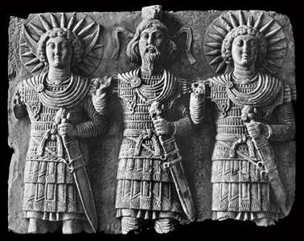

Archív forrásszöveg. A benne szereplő időpontok, árak és részvételi feltételek a közlés időszakára vonatkoznak.
A FEJZETCÍMEKRE ÉS A SZERZŐK NEVÉRE KATTINTVA RÉSZLETEKETTEKINTHET MEG A KÖNYV TARTALMÁBÓL LOVASHARC.HU A MAGYAR MÚLT JÖVŐJE Dr. Bakay Kornél bevezető ajánlása I. A HUN - MAGYAR HARCMŰVÉSZET ÉS ESZKÖZEI - A "közép-európai magyar" lovasíjász hadviselés vázlatos történeteTARTALOM
- Harcművészet. A küzdelem művészete - Az íjak alaptípusai - A lovasíjász taktikai öv (fegyveröv) - A (hun) magyar íj - A nyil - A nyilvessző építése, alapanyagai - Nyilvessző vadászatra és harcra A nyillövés hatása - A tüzes és gyújtó nyilakról - Ahangot adó, fütyülő vagy zengő nyilakról - A kengyel II. A HAGYOMÁNYOS LÖVÉSTECHNIKA - A hagyományos lövéstechnika - Az "indián módszerről" - Húzáshossz és az íjász testének fix pontjai - Futtatási irány III. A HAGYOMÁNYOS CÉLZÁSTECHNIKA - A célzás technikája IIII. A TÖLTÉS TECHNIKÁJA - Az ábrázolások vizsgálata - A nyilak tárazásáról - Nyilak a kézben - Íjászok Európa és Ázsia határán ÖSSZEFOGLALÁS - Összefoglalás - Lovasíjásztechnikák V. PONTLÖVÉS, NYILZÁPOR - A pontlövés és a nyilzápor gyakorlata VI. KASSAI LAJOS GONDOLATAI Kassai Lajos az íjászatról és a lovasíjászatról VII. ÍJKÉSZÍTÉS Grózer Csaba a hagyományos anyagokból épített íjak készítéséről VIII. A LÓ Kelemen Zsolt - Lovas nemzet, ló nélkül Eördögh Réka A lovak nyomában - A középkori Kárpát-medence lovainak mtDNS alapú eredetvizsgálata Trungel László a hucul lóról Eördögh AndrásA mi lovunk - Tenyésztői tapasztalatok - Tenyésztési cél - Zarándoklatunk tanulságai IX. LOVAS - ARANYMETSZÉS Eörögh Sára - Ló és lovas arányossága X. ARANYMETSZÉS ÉS AZ ÍJ - A fegyverek és az emberi test rányossága XI. LÓ, LOVAS, LOVASÍJÁSZ AZ EGYTEMES KULTÚRÁBAN Pap Gábor - Lovasíjász égen és földön